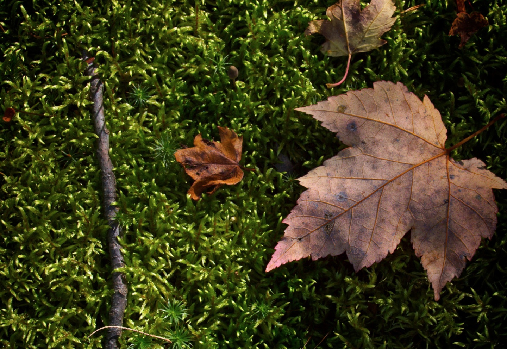
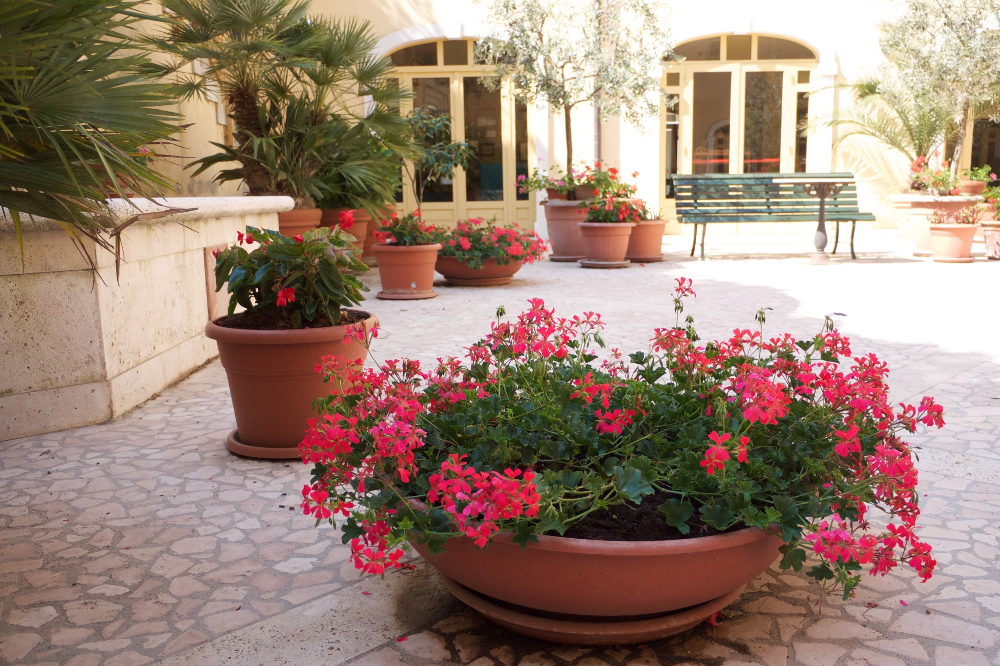
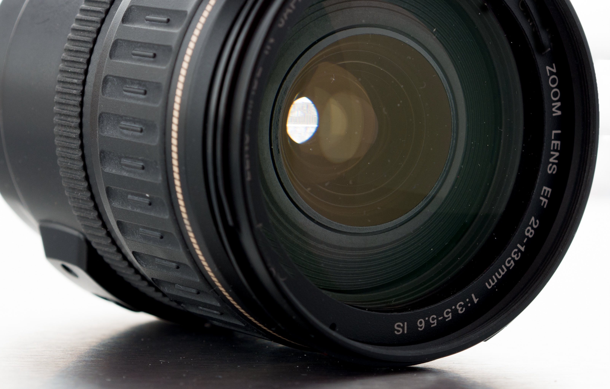
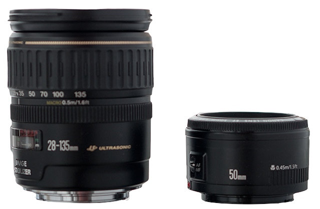
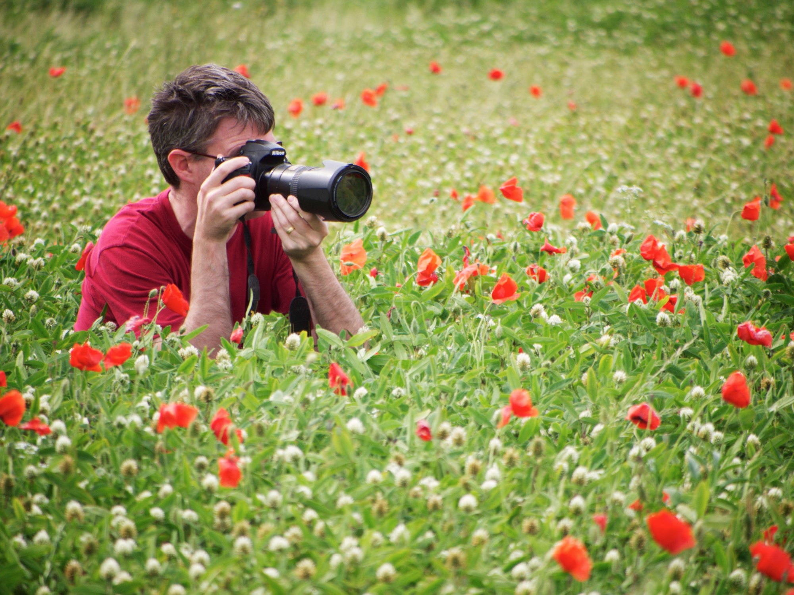

It’s likely that your camera came with a zoom lens. Often called a “kit” lens, it’s a great starter lens, allowing you to do a variety of things with a fairly wide variety of subjects.
There are, however, other lenses out there for your camera that can expand your range of things that you can do. Other zooms and single-focal-length lenses (often called “prime” lenses) are tools that you may want to add to your photographic arsenal as you progress towards mastery of the medium.

4.1 Lens Focal Length
THE BASICS
- Focal length is expressed in millimeters; i.e. a 50mm lens
- Focal length determines how wide or narrow your field of view is
- Telephoto or “long” lenses have a narrow field of view and magnify the subject
- Wide angle or “short” lenses have a wide field of view and make the subject appear smaller
- Most cameras come with a “kit” lens that is a zoom lens; allowing many focal lengths in one lens
- The other basic type of lens is a “prime” lens; it’s focal length is fixed at one field of view
The ability to change the focal length of the lens is one of the most wonderfully creative and interesting aspects of photography. Lens focal lengths are usually referred to in millimeters (mm) and don’t refer to the actual physical length of the lens, but rather to the distance that the lens needs to focus inside the camera from the point where the light rays converge to the digital sensor or film at the back of the camera.
The focal length of a lens is an indication of how wide or narrow your camera’s field of view is or how much you see in the scene in front of you. It also indicates the magnification of the scene or how large or how small individual objects in your photograph will be. So, by changing the focal length of the camera’s lens, you can change how much of a scene you see in the frame, allowing you to concentrate the viewer’s attention on more of the overall scene with a wide lens or a small section of your selected subject with a long or telephoto lens.
In addition to changing the field of view, changing your lens focal length can also help you control how your subject in the final photograph. With a wide angle lens, you can exaggerate the difference in distance between nearby subjects and ones that are farther away. This is due to the fact that wide angle lenses, with their wide field of view, make everything in the frame look smaller. Because they are smaller, you are likely to move closer to your subject, altering the proportion of distance between the nearest objects and the farthest ones.
Conversely, a long or telephoto lens can give the illusion of compressing the space in the camera’s field of view. This is due to the fact that telephoto lenses, with their narrow field of view, make everything in the frame look bigger. Because the subject is bigger, you are likely to move farther from your subject, again altering the proportion of distance between the nearest objects and the farthest ones, but in this case, making those objects appear to be closer in size to each other.
The Importance of Camera Position

This photograph was made with a wide angle lens. The photographer’s position was chosen to keep the foreground flower pot about the same size as in other photograph in this gallery. Note how the difference in distance from the camera changes the sense of space in the scene.
4.2 Zoom Lenses and Prime Lenses
THE BASICS
- Zoom lenses allow you to change the focal length of a single lens
- Prime lenses are a single focal length for a given lens
- Zoom lenses are versatile, but often heavy and usually don’t have a large maximum aperture
- Prime lenses are usually lighter and often have a large maximum aperture

One of the many choices that you have as a photographer is whether to choose a zoom lens or a fixed-focal-length or “prime” lens for your photography. It’s likely that your camera, whether a film or digital model, came with a zoom lens when you purchased it, yet you may find other photographers extolling the virtues of prime lenses. What are the differences between zooms and primes?
Zoom Lenses
A zoom lens has a variable focal length. When you turn the zoom ring on the lens, you move glass elements inside the lens to achieve a different angle of view. So, you can start out looking at your subject with a wide angle of view and, by turning the zoom ring, change to a narrow angle of view, all with one lens. Because of the complex optical elements inside a zoom lens, they are often large and heavy, but they make up for their bulk by being versatile.
Zoom lenses have some specifications which can tell you about the characteristics of a given lens. For example, a lens might be referred to as “18mm to 55mm” (or just “18 to 55”), which means that the lens can be set for any focal length between 18mm and 55mm.
Additionally, many zoom lenses (especially inexpensive, consumer-grade zooms) might also have variable aperture ranges, so you might see something like f/3.5-5.6. This means that the larger aperture is available at the wider-angle focal lengths but the lens switches to the slightly smaller aperture number as its largest aperture at the longer focal lengths.
Stepping up to a (more expensive!) professional-level zoom lens will give you a consistent (and usually larger) aperture value throughout the lens’ zoom range.
Prime Lenses
In contrast to a zoom lens, a prime lens is a lens with a fixed focal length, so its angle of view is always the same and cannot be changed. The only way you can make your subject appear larger or smaller is to move yourself closer to or farther from the subject.
Given that zoom lenses can cover many focal lengths in just one lens, the question might arise as to why anyone would want a fixed focal length lens. There are essentially four reasons that prime lenses are prized by photographers: speed, quality, cost, and size.

A 28-135mm Zoom Lens (left) and a 50mm Prime lens (right). The zoom has a variable aperture of ƒ/3.5 for wide settings and ƒ/5.6 for the telephoto settings, while the prime lens has an ƒ/1.8 opening.
First on the list is speed. The maximum aperture opening on prime lenses is usually much bigger than on zoom lenses, especially relative to cost. So, it’s easier to find a prime lens with a maximum opening of ƒ/1.8 or even ƒ/1.4 than it is to find a zoom lens with that capability. This means the ability to photograph in lower light levels and to create very shallow depth of field. A lens with a large maximum aperture is said to be a “fast” lens.
A second benefit for prime lenses is their image quality. Despite the advances in modern zoom lenses, prime lenses often produce sharper, higher-quality images than their zoom counterparts.
Many photographers love the sharpness and contrast that prime lenses provide.
Thirdly, prime lenses are usually cost-effective. Many modern prime lenses are inexpensive, especially for their quality and zoom lenses, especially the best-quality ones, are usually quite costly. A set of three fast prime lenses that cover the range of focal lengths that a zoom might handle can be less expensive than a single high-quality zoom lens. So, regardless of your budget, you can experience world-class optics at a fraction of a cost of an expensive zoom.
Lastly, prime lenses are almost always much smaller and much lighter than zoom lenses. This means that you’re lugging around less weight with a camera body and a couple of prime lenses than a camera body and a single zoom.
Most photographers find that a mix of prime and zoom lenses is a good option for their needs. If you purchased a camera with an inexpensive “kit” zoom lens, you may want to consider upgrading to a faster zoom with a consistent aperture range at some future point. For prime lenses, a good choice might be a 50mm ƒ/1.8, a reasonably priced lens available from most manufacturers.

Choose your camera position first, then choose the focal length that frames the scene the way you want it.
Zoom With Your Feet
Whether you have a single zoom, a set of prime lenses or a combination of both, there is a strategy that can really help you use your lenses effectively that I like to call “zoom with your feet.”
This involves choosing your camera position first, making choices about how near or far you would like to be, how one part of the subject lines up with the others, etc, “zooming with your feet” to get to the right spot for the composition you want.
Then, when camera position has been established, choose the appropriate focal length of lens to fill the frame with what information you want to show — a short or wide angle of view lens will show more of your subject, a long or narrow angle of view lens will show less.
This concept applies to zoom lenses, too; choose camera position first, then zoom to frame the area you want to see. Essentially, you can think of the range of your zoom lens as being a set of prime lenses; create your composition, then choose a focal length for how much or how little you want to show.
Using this strategy helps you avoid falling into the trap of standing in one place and just zooming randomly to find a good photograph. Remember that the position of the camera dictates subject interrelationships and the feeling of distance or proximity to your subject. The lens focal length will determine how much of the scene will appear on your film or digital sensor.
4.3 Focus
THE BASICS
- Focus defines what is sharp in your photographs
- Most cameras have both autofocus and manual focus options
- Autofocus works well most of the time, but manual focus gives you more control
Focus is the degree of sharpness in your photograph; whether an image is clear or blurred. A lens is only capable of focusing on a single plane in a scene but you can use can use depth of field to bring more of the objects in front of or behind that plane into focus. Elements inside the lens move to correctly focus the light rays at the back of the camera.
In most modern cameras, there are sophisticated auto-focus systems that use a variety of strategies to figure out where to place the plane of focus. You can read about the various methods of autofocus that your camera employs in your owners’ manual.
In addition to autofocus, most cameras have the ability to allow you to focus the camera manually. Manual focus is a very, very useful tool to have, as it allows you to exactly define where the plane of focus falls in your photographs.
Make sure you know how to find the switch that switches between manual and autofocus on your camera and use manual focus when the camera doesn’t focus correctly for your needs.
In this photograph, the camera's autofocus system wasn't sure whether to focus on the fenceposts in the background or the foreground. A flip of a switch brought me into manual focus mode so I could get the objects I wanted to have sharp in my photograph into focus.
4.4 Depth of Field
THE BASICS
- The aperture setting is the primary control for depth of field
- The plane of focus is another element in controlling depth of field
- Lens focal length is a third element that affects apparent depth of field
Previously, you learned about at how the aperture setting on your lens controls depth of field (near-to-far focus) in your photographs. While the aperture is considered the primary method of controlling depth of field, there are two other elements at play, each of them working hand-in-hand with the other two to control what’s in focus in your pictures and what is blurred.
A second element that controls depth of field is the camera’s plane of focus or the place in your scene where the camera is focused, near-to-far. The closer the plane of focus is to the camera, the more shallow the depth of field will be.
Conversely, the farther away the plane of focus is from the camera, the more things will be in focus near-to-far.
So, when you are very close to the subject and you need more depth of field, backing up will help you get more things in focus, near-to-far. Or, if you would like to have shallow depth of field, (blurring the background in a portrait, for example) moving in closer can help make that happen.
The depth of field behind the focal plane is always greater than the depth of field in front of the focal plane. So, to obtain the greatest depth of field possible in a given scene, focus your camera about 1/3 of the way into the scene and use a smaller aperture (ƒ/11 or ƒ/16) to bring the foreground and background into focus.
A third element that at least appears to affect depth of field is the focal length of the lens. The simple way to remember this is that the longer the focal length, the more shallow the depth of field. Shorter focal lengths (like 20mm) will appear to have much greater depth of field than a longer lens (like 200mm).
In actuality, while the focal length of the lens appears to have a significant impact on depth of field, if the subject is about the same size in the frame, the depth of field will remain about the same regardless of the focal length of the lens. Of course, to keep the subject about the same size in the frame, you would have to move closer with a short (wide angle) lens or farther away with a long (or telephoto) lens.
Plane of Focus
A combination of a wide lens, a small aperture (ƒ/22) and careful placement of the plane of focus to obtain maximum depth of field.